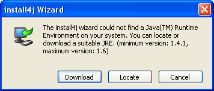
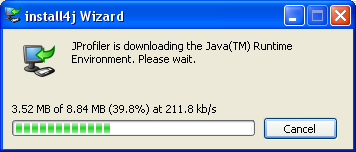

How Installers Find a JRE


How Installers Find a JRE |
|
It is copied to the i4j_jres directory in a common folder which depends on the operating system:
If the above folder is not writable, the i4j_jres directory will be created in the use home directory and the shared JRE will only be shared for the current user.
Other installers generated by install4j will find this JRE. It will not be made publically available (e.g. in the Windows registry). For each Java version, only one such JRE can be installed. Shared JREs are never uninstalled.
Your application will also use the JRE selected by the installer.

and offers the following options:Download a dynamically bundled JRE

as configured in the Bundled JRE step of the media wizard.
You can force the installer to skip the first two steps and show this dialog immediately with the -manual command line parameter.
|
|